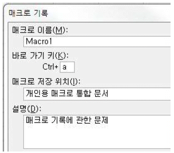
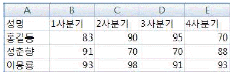
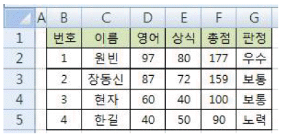
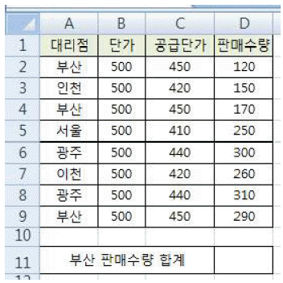
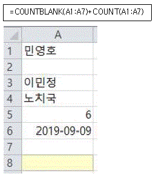
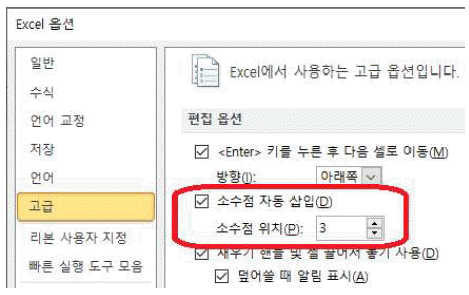
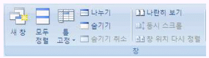
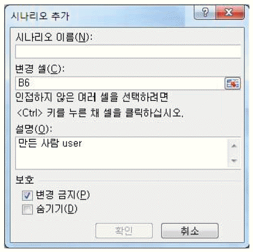
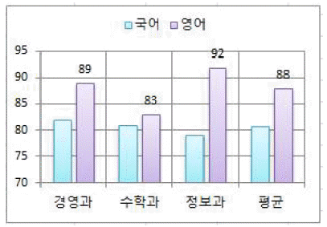

컴퓨터활용능력-2급 (2019-03-02 기출문제)
1과목: 컴퓨터 일반
1. 다음 중 폴더의 [속성] 창에 대한 설명으로 옳지 않은 것은?(윈도우 10 검증 완료)
- 폴더가 포함하고 있는 하위 폴더 및 파일의 개수를 알 수 있다.
- 폴더의 특정 하위 폴더를 삭제할 수 있다.
- 폴더를 네트워크와 연결되어 있는 다른 컴퓨터에서 접근 할 수 있도록 공유시킬 수 있다.
- 폴더에 '읽기 전용' 속성을 설정하거나 해제할 수 있다.
(정답률: 67%)

2. 다음 중 Windows에서 [디스크 정리]를 수행할 때 정리 대상 파일에 해당하지 않는 것은?(윈도우 10 검증 완료)
- 임시 인터넷 파일
- 사용하지 않은 폰트(*.TTF) 파일
- 휴지통에 있는 파일
- 다운로드한 프로그램 파일
(정답률: 73%)
3. 다음 중 추상화, 캡슐화, 상속성, 다형성 등의 특징을 지니고 있으며, 크고 복잡한 프로그램 구축이 어려운 절차형 언어의 문제점을 해결하기 위해 개발된 프로그래밍 기법은?
- 구조적 프로그래밍
- 객체지향 프로그래밍
- 하향식 프로그래밍
- 비주얼 프로그래밍
(정답률: 84%)
4. 다음 중 컴퓨터에서 사용되는 바이트(Byte)에 대한 설명으로 옳지 않은 것은?
- 1바이트는 8비트로 구성된다.
- 일반적으로 영문자나 숫자는 1Byte로 한 글자를 표현하고, 한글 및 한자는 2Byte로 한 글자를 표현한다.
- 1바이트는 컴퓨터에서 각종 명령을 처리하는 기본단위이다.
- 1바이트로는 256가지의 정보를 표현할 수 있다.
(정답률: 62%)
5. 다음 중 인터넷 서비스를 위한 프로토콜로 웹페이지와 웹브라우저 사이에서 하이퍼텍스트 문서를 전송하기 위한 것은?
- TCP/IP
- HTTP
- FTP
- WAP
(정답률: 88%)
6. 다음 중 인터넷을 이용한 전자 우편(E-mail)에 관한 설명으로 옳지 않은 것은?
- 전자 우편에서는 SMTP, MIME, POP3 프로토콜 등이 사용된다.
- 전자 우편 주소는 "아이디@도메인 네임"으로 구성된다.
- 한 사람이 동시에 여러 사람에게 동일한 전자 우편을 보낼 수 있다.
- 받은 메일에 대해 작성한 답장만 발송자에게 전송하는 기능을 전달(Forward)이라 한다.
(정답률: 81%)
7. 다음 중 컴퓨터에서 문자 데이터를 표현하는 방법으로 옳지 않은 것은?
- EBCDIC
- Unicode
- ASCII
- Parity bit
(정답률: 77%)
8. 다음 중 컴퓨터에서 그래픽 데이터 표현 방식인 비트맵(Bitmap) 방식에 관한 설명으로 옳지 않은 것은?
- 점과 점을 연결하는 직선이나 곡선을 이용하여 이미지를 표현한다.
- 이미지를 확대하면 테두리가 거칠어진다.
- 파일 형식에는 BMP, GIF, JPEG 등이 있다.
- 다양한 색상을 사용하여 사실적 이미지를 표현할 수 있다.
(정답률: 73%)
9. 다음 중 Windows의 [작업 관리자]에서 설정할 수 있는 작업으로 옳지 않은 것은?(윈도우 10 검증 완료)
- 실행 중인 응용 프로그램을 [작업 끝내기]로 종료할 수 있다.
- 현재 실행 중인 프로세스와 프로세스에서 실행되는 서비스를 볼 수 있다.
- CPU 사용정도와 CPU 사용현황을 확인할 수 있다.
- 실행 중인 응용 프로그램의 실행 순서를 변경할 수 있다.
(정답률: 71%)
10. 다음 중 프로그램이 실행될 때 발생하는 메인 메모리 부족 문제를 보완하기 위해 하드 디스크의 일부를 메인 메모리처럼 사용하게 하는 메모리 관리 기법을 의미하는 것은?
- 캐시 메모리
- 디스크 캐시
- 연관 메모리
- 가상 메모리
(정답률: 82%)
11. 다음 중 멀티미디어와 관련하여 동영상 전문가 그룹에 의해서 제안된 비디오 또는 오디오 압축에 관한 일련의 표준으로 옳은 것은?
- XML
- SVG
- JPEG
- MPEG
(정답률: 76%)
12. 다음 중 인터넷 주소 체계인 IPv6에 대한 설명으로 옳은 것은?
- 주소는 8비트씩 16개 부분으로 총 128비트로 구성되어 있다.
- 주소를 네트워크 부분의 길이에 따라 A클래스에서 E클래스까지 총 5단계로 구분한다.
- IPv4와의 호환성은 낮으나 IPv4에 비해 품질 보장은 용이하다.
- 주소의 단축을 위해 각 블록에서 선행되는 0은 생략할 수 있다.
(정답률: 51%)
13. 다음 중 컴퓨터에서 사용하는 일반 하드디스크에 비하여 속도가 빠르고 기계적 지연이나 에러의 확률 및 발열 소음이 적으며, 소형화, 경량화할 수 있는 하드디스크 대체 저장 장치는?
- DVD
- HDD
- SSD
- ZIP
(정답률: 87%)
14. 다음 중 Windows에서 하드 디스크를 포맷하기 위한 [포맷] 창에서 설정 가능한 항목으로 옳지 않은 것은?(윈도우 10 검증 완료)
- 볼륨 레이블 입력
- 파티션 제거
- 파일 시스템 선택
- 빠른 포맷 선택
(정답률: 65%)
15. 다음 중 컴퓨터 범죄 예방과 대책에 관한 설명으로 옳지 않은 것은?
- 해킹 여부를 정기적으로 검사한다.
- 의심이 가는 이메일은 열어서 내용을 확인하고 삭제한다.
- 백신 프로그램을 설치하고 자동 업데이트 기능을 설정한다.
- 회원 가입한 사이트의 패스워드를 주기적으로 변경한다.
(정답률: 89%)
16. 다음 중 인터넷 익스플로러의 [인터넷 옵션]-[프로그램] 탭에서 설정 가능한 기능으로 옳지 않은 것은?
- HTML 파일을 편집하는 데 사용할 프로그램을 지정할 수 있다.
- 시스템에 설치된 브라우저의 추가 기능을 사용하도록 설정할 수 있다.
- 웹 사이트를 열 때 사용할 기본 웹 브라우저를 지정할 수 있다.
- 수정된 홈페이지를 업로드하기 위한 FTP 서버를 지정 할 수 있다.
(정답률: 54%)
17. 다음 중 Windows의 [메모장]에 대한 설명으로 옳지 않은 것은?(윈도우 10 검증 완료)
- 작성한 문서를 저장할 때 확장자는 기본적으로 .txt가 부여된다.
- 특정한 문자열을 찾을 수 있는 찾기 기능이 있다.
- 그림, 차트 등의 OLE 개체를 삽입할 수 있다.
- 현재 시간/날짜를 삽입하는 기능이 있다.
(정답률: 82%)
18. 다음 중 Windows의 [키보드 속성] 창에서 설정할 수 있는 내용으로 옳지 않은 것은?(윈도우 10 검증 완료)
- 문자 반복을 위한 재입력 시간
- 포인터 자국 표시
- 커서 깜박임 속도
- 문자 반복을 위한 반복 속도
(정답률: 64%)
19. 다음 중 Windows의 바로 가기 키에 대한 설명으로 옳지 않은 것은?(윈도우 10 검증 완료)
- <Ctrl> + <Esc>키를 누르면 Windows 시작 메뉴를 열수 있다.
- 바탕 화면에서 아이콘을 선택한 후 <Alt> + <Enter>키를 누르면 선택된 항목의 속성 창을 표시한다.
- 바탕 화면에서 폴더나 파일을 선택한 후 <F2>키를 누르면 이름을 변경할 수 있다.
- 폴더 창에서 <Alt> + <스페이스>키를 누르면 특정 폴더 내의 모든 파일이나 폴더를 선택할 수 있다.
(정답률: 66%)
20. 다음 중 Windows에서 프린터 설치에 관한 설명으로 옳지 않은 것은?(윈도우 10 검증 완료)
- 새로운 프린터를 설치하기 위하여 [장치 및 프린터]창에서 [프린터 추가]를 클릭하여 [프린터 추가 마법사]를 이용한다.
- 설치할 프린터 유형은 로컬 프린터와 네트워크, 무선 또는 Bluetooth 프린터 중에서 하나를 선택할 수 있다.
- 네트워크 프린터를 선택한 경우에는 연결할 프린터의 포트를 지정한다.
- 컴퓨터에 설치된 여러 대의 프린터 중에 현재 설치 중인 프린터를 기본 프린터로 설정할 것인지 선택한다.
(정답률: 58%)
2과목: 스프레드시트 일반
21. 다음 중 셀 범위를 선택한 후 그 범위에 이름을 정의하여 사용하는 것에 대한 설명으로 옳지 않은 것은?
- 이름은 기본적으로 상대참조를 사용한다.
- 이름에는 공백이 없어야 한다.
- 이름은 대소문자를 구별하지 않는다.
- 정의된 이름은 다른 시트에서도 사용할 수 있다.
(정답률: 53%)
22. 다음 중 아래와 같이 설정된 [매크로 기록] 대화상자에 대한 설명으로 옳지 않은 것은?

- 매크로 이름은 Macro1이며, 변경하고자 할 경우 [매크로]대화상자에서만 변경할 수 있다.
- 작성된 'Macro1' 매크로는 'Personal.xlsb'에 저장된다.
- 설명은 일종의 주석으로 반드시 지정해 주지 않아도 된다.
- 작성된 'Macro1' 매크로는 <Ctrl>+<a>키를 눌러 실행 할 수 있다.
(정답률: 63%)
23. 다음 중 워크시트에 숫자 '2234543'을 입력한 후 사용자 지정 표시 형식을 설정하였을 때, 화면에 표시되는 결과로 옳지 않은 것은?
- 형식: #,##0.00 , 결과: 2,234,543.00
- 형식: 0.00 , 결과: 2234543.00
- 형식: #,###,"천원" , 결과: 2,234천원
- 형식: #％ , 결과: 223454300％
(정답률: 59%)
24. 다음 중 채우기 핸들에 대한 설명으로 옳은 것은?
- 문자와 숫자가 혼합된 셀의 채우기 핸들을 <Ctrl> 키를 누른 채 드래그하면 동일한 내용으로 복사된다.
- 숫자가 입력된 첫 번째 셀과 두 번째 셀을 범위로 설정 한 후 채우기 핸들을 드래그하면 두 번째 셀의 값이 복사된다.
- 숫자가 입력된 셀에서 <Ctrl> 키를 누른 채 채우기 핸들을 오른쪽으로 드래그하면 숫자가 1씩 감소한다.
- 사용자 정의 목록에 정의된 목록 데이터의 첫 번째 항목을 입력하고 <Ctrl> 키를 누른 채 채우기 핸들을 드래그하면 목록 데이터가 입력된다.
(정답률: 48%)
25. 다음 중 이미 부분합이 계산되어 있는 상태에서 새로운 부분합을 추가하고자 할 때 수행해야 할 작업으로 옳은 것은?
- [모두 제거] 단추를 클릭
- '새로운 값으로 대치' 설정을 해제
- '그룹 사이에 페이지 나누기'를 설정
- '데이터 아래에 요약 표시' 설정을 해제
(정답률: 70%)
26. 다음 중 [페이지 설정] 대화상자에서 워크시트에 포함된 메모의 인쇄 여부 및 인쇄 위치를 지정하기 위해 선택해야 할 탭은?
- [페이지] 탭
- [여백] 탭
- [머리글/바닥글] 탭
- [시트] 탭
(정답률: 62%)
27. 다음 중 날짜 및 시간 데이터에 관한 설명으로 옳지 않은 것은?
- 날짜 데이터를 입력할 때 년도와 월만 입력하면 일자는 자동으로 해당 월의 1일로 입력된다.
- 셀에 '4/9'을 입력하고 <Enter>키를 누르면 셀에는 '04월 09일'로 표시된다.
- 날짜 및 시간 데이터의 텍스트 맞춤은 기본 왼쪽 맞춤으로 표시된다.
- <Ctrl> + <;>키를 누르면 시스템의 오늘 날짜, <Ctrl> + <Shift> + <;>키를 누르면 현재 시간이 입력된다.
(정답률: 62%)
28. 다음 중 아래의 데이터를 이용하여 각 데이터 간 값을 비교하는 차트를 작성하려고 할 때 가장 적절하지 않은 차트는?

- 세로 막대형
- 꺾은선형
- 원형
- 방사형
(정답률: 67%)
29. 다음 중 판정[G2:G5] 영역에 총점이 160 이상이면 '우수', 100 이상 160 미만이면 '보통', 100 미만이면 '노력'으로 입력하려고 할 경우 [G2] 셀에 입력할 수식으로 옳은 것은?

- =IF(F2>=160,IF(F2>=100,"우수","보통","노력"))
- =IF(F2>=160,"우수",IF(F2>=100,"보통","노력"))
- =IF(OR(F2>=160,"우수",IF(F2>=100,"보통","노력"))
- =IF(F2>=160,"우수",IF(F2>=100,"보통",IF(F2=100,"노력"))
(정답률: 55%)
30. 다음 중 [텍스트 나누기] 기능에 대한 설명으로 옳지 않은 것은?
- 영역을 선택한 후 [데이터] 탭 [데이터 도구]그룹의 [텍스트 나누기]를 클릭하면 [텍스트 마법사] 대화 상자가 실행된다.
- [데이터 미리 보기]에서 나눠진 열을 선택한 후 드래그하여 열의 순서를 변경할 수 있다.
- 각 열을 선택하여 데이터 서식을 지정할 수 있다.
- 일정한 열 너비 또는 구분 기호로 구분하여 데이터를 나눌 수 있다.
(정답률: 52%)
31. 다음 중 매크로에 대한 설명으로 옳은 것은?
- 매크로의 이름은 문자로 시작하여야 하고, 공백을 포함할 수 있다.
- 한 번 작성된 매크로는 삭제할 수 없다.
- 매크로 작성을 위해 Visual Basic 언어를 따로 설치해야한다.
- 매크로란 반복적인 작업을 단순화하기 위해 작업과정을 자동화하는 기능이다.
(정답률: 70%)
32. 다음 중 아래 워크시트에서 '부산' 대리점의 판매수량의 합계를 [D11] 셀에 구하기 위한 수식으로 옳지 않은 것은?

- =SUM(D2,D4,D9)
- =SUMIF(A2:A9,"부산",D2:D9)
- =DSUM(A1:D9,D1,A2)
- =SUMIF(A2:D9,A2,D2:D9)
(정답률: 55%)
33. 다음 중 [A8] 셀에 아래 함수 식을 입력했을 때 나타나는 결과로 옳은 것은?

- 4
- 5
- 6
- 7
(정답률: 55%)
34. 다음 중 아래 그림과 같이 소수점 자동 삽입의 소수점 위치를 '3'으로 설정한 상태에서 숫자 5를 입력하였을 때 화면에 표시되는 결과로 옳은 것은?

- 0.0⑤
- 3
- 5
- 5.000
(정답률: 69%)
35. 다음 중 시스템의 현재 날짜에서 년도를 구하는 수식으로 옳은 것은?
- =DAYS360(YEAR())
- =DAY(YEAR())
- =YEAR(TODAY())
- =YEAR(DATE())
(정답률: 72%)
36. 다음 중 [보기] 탭의 [창] 그룹에 대한 설명으로 옳지 않은 것은?

- [나란히 보기]를 클릭하면 2개의 통합 문서를 동시에 비교 보기 할 수 있다.
- [숨기기]를 클릭하면 선택되어 있는 현재 워크시트를 숨긴다.
- [나누기]를 취소하려면 창을 나누고 있는 창 구분선을 더블클릭한다.
- [모두 정렬]은 현재 열려진 여러 개의 통합문서를 한 화면에 모두 표시할 때 사용한다.
(정답률: 44%)
37. 다음 중 데이터 정렬에 대한 설명으로 옳지 않은 것은?
- 사용자 지정 목록을 사용하면 사용자가 정의한 순서대로 정렬할 수 있다.
- 색상별 정렬이 가능하여 글꼴 색 또는 셀 색을 기준으로 정렬할 수도 있다.
- 정렬 옵션을 이용하면 데이터를 열 방향 또는 행 방향으로 선택하여 정렬할 수 있다.
- 표에 병합된 셀들이 포함되어 있는 경우 병합된 셀들은 맨 아래쪽으로 정렬된다.
(정답률: 62%)
38. 다음 중 [시나리오 추가] 대화 상자에 대한 설명으로 옳지 않은 것은?

- [데이터]-[데이터 도구]-[가상 분석]-[시나리오 관리자]대화상자에서 [추가] 단추를 클릭하면 표시되는 대화 상자이다.
- '변경 셀'은 변경 요소가 되는 값의 그룹이며, 하나의 시나리오에 최대 32개까지 지정할 수 있다.
- '설명'은 시나리오에 대한 추가적인 설명으로 반드시 입력해야 한다.
- '보호'의 체크 박스들은 [검토]-[변경 내용]-[시트 보호]를 설정한 경우에만 적용되는 항목들이다.
(정답률: 70%)
39. 다음 중 아래 차트에 대한 설명으로 옳은 것은?

- 세로 (값) 축의 축 서식에서 주 단위 간격을 '95'로 설정하였다.
- 데이터 계열 서식의 '계열 겹치기' 값을 0보다 작은 음수 값으로 설정하였다.
- '영어'의 데이터 레이블은 안쪽 끝에 표시되고 있다.
- 가로 (항목) 축의 주 눈금선과 보조 눈금선이 함께 표시되고 있다.
(정답률: 58%)
40. 다음 중 차트의 범례 설정에 대한 설명으로 옳지 않은 것은?
- 범례 위치는 [범례 서식] 대화상자나 [레이아웃]탭 [레이블] 그룹에서 쉽게 변경할 수 있다.
- 차트에서 범례 또는 범례 항목을 클릭한 후 <Delete> 키를 누르면 범례를 쉽게 제거할 수 있다.
- 기본적으로 범례의 위치는 차트의 다른 구성요소와 겹치지 않게 표시된다.
- 마우스로 범례를 이동하거나 크기를 변경하면 그림 영역의 크기 및 위치는 자동으로 조정된다.
(정답률: 62%)